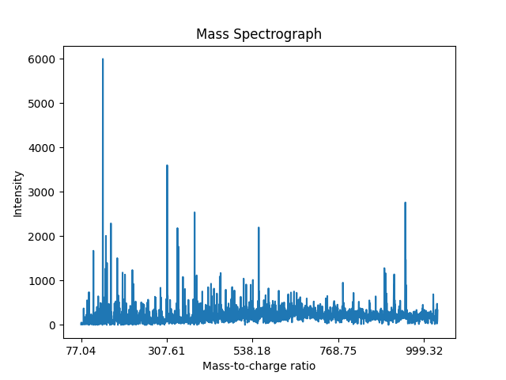
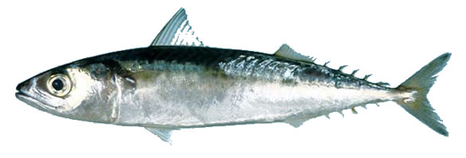
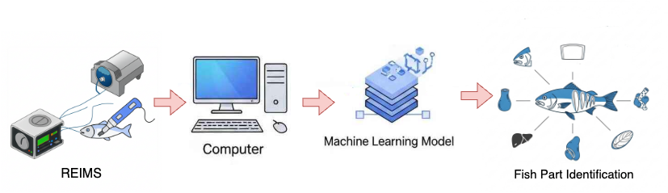

With the foundational knowledge established, chapter:datasets-and-processing details the empirical basis of this research. This chapter explains the data pipeline in three stages. First, sec:data_source_acquisition describes the Data Source and Acquisition, detailing the origin of the REIMS data from AgResearch, New Zealand, and the specifics of its laser-assisted generation. Second, sec:data_curation_preprocessing explains the Data Curation and Preprocessing, showing how the raw spectral signal was converted into a high-dimensional data matrix and then normalized for consistency. Finally, sec:task_specific_datasets provides a detailed breakdown of the Task-Specific Datasets, explaining how the final data matrix was curated and split to create the five distinct classification tasks that form the basis of this thesis's experiments.
Data Source and Acquisition
The research described in this thesis utilizes a series of datasets derived from Rapid Evaporative Ionization Mass Spectrometry (REIMS) analysis of seafood samples. This data was provided by AgResearch, which aims to develop quality assurance systems for marine biomass processing [AgResearch, 2025]. An example of a REIMS mass spectrograph is given in fig:mass-spectrograph. The utility of REIMS extends to a wide range of food analyses, enabling researchers to make complex and rapid measurements of meat composition to assess quality and detect fraud [Ross, 2021], discriminate between milk samples fermented with different starter cultures [Murphy, 2021], and even differentiate lamb meat based on various aging methods and dehydration levels [Zhang, 2023].

The REIMS data were collected at AgResearch (now Bioeconomy Science Institute). All samples were collected following standard AgResearch animal ethics and welfare protocols. The analysis utilized a Laser-Assisted REIMS setup, coupling a \(\text{CO}_2\) laser interface to a Xevo G2 XS quadrupole time-of-flight mass spectrometer (Waters Ltd, Wilmslow, UK) for ionization and analysis. Samples were received frozen, and all analyses were performed within 10 minutes of removal from the freezer to prevent lipid oxidation.
During acquisition, the MS was run in negative ionization mode (\(\text{MS}^1\) only, with no collision energy applied). This mode is commonly used in REIMS analysis as it preferentially ionizes and detects deprotonated species of lipids and fatty acids, which are key biomarkers in biological tissues. The MS scanned between \(\mathbf{m/z}\) 50–1200 at a scan rate of 2 Hz. Isopropanol was infused at a rate of \(200 \text{ µL/min}\) to enhance ionization.
Data Curation and Preprocessing
Data processing began with ProGenesis Bridge (Waters Ltd), which performed baseline removal and lock mass correction (using oleic acid, \(\text{C}18:1\)) to maintain mass accuracy. Further processing with ProGenesis QI generated the final spectra matrix by picking individual mass features across the range. Each spectrum comprises \(2,080 \text{ distinct } \mathbf{m/z} \text{ features}\), generally spanning a range from approximately \(\text{77.04 m/z}\) to \(\text{999.32 m/z}\). Triplicate measurements per biological replicate were collected, averaged, and merged with the metadata to create the final data matrix. The high dimensionality (2,080 features), coupled with often limited sample sizes for specific tasks, presents a `"curse of dimensionality" challenge for many traditional machine learning algorithms [Koppen, 2000].
Normalization
A standard preprocessing step applied across all datasets is normalization. Specifically, the raw REIMS spectral data underwent a two-stage normalization process. First, the data were normalized based on total intensity (Total Ion Current, TIC) across the mass spectral range. This crucial step accounts for sample-to-sample variations in ionization efficiency due to subtle differences in tissue characteristics or instrument performance.
Following this, the \(\text{m/z}\) intensity values were further scaled to fall within the range of \(x\in[0,1]\) using min-max normalization. The formula for this normalization is:
X" = X_i - X_X_ - X_ \]
Where \(X_{i}\) is the intensity value after TIC normalization, \(X_{\min}\) is the minimum value of that feature in the training set, and \(X_{\max}\) is the maximum value of that feature in the training set. This final scaling helps to prevent features with larger absolute values from dominating distance calculations or gradient updates in certain machine learning algorithms.
Task-Specific Datasets
The final curated and normalized data matrix was used to create five distinct datasets, each tailored to a specific classification task. The experimental methodology differed between tasks based on dataset size and structure.
For the first four tasks (Species, Body Part, Oil Contamination, and Adulteration), we employed a stratified k-fold cross-validation strategy. This approach is ideal for these datasets as it ensures that each fold (i.e., each train/test split) contains a representative distribution of all classes, which is especially important for the imbalanced ``Body Part" dataset. For most tasks, a 5-fold split was used (80% train, 20% test); for the small ``Body Part" dataset, a 3-fold split was used (\(\sim\)67% train, \(\sim\)33% test).
For the fifth task, `"Batch Detection," a fixed stratified split was used due to its relatively much larger number of samples. The dataset was permanently divided into 60% training, 20% validation, and 20% testing sets, with the extreme class imbalance (2.82% positive class) being preserved across all three sets.
Species Identification
The task is to distinguish between two key New Zealand fish species: Hoki (New Zealand"s largest fishery) and Mackerel, illustrated in assets/fig:hoki-mackerel, based on 2080 features derived from REIMS analysis. fig:fish-species-diagram illustrates the fish species classification workflow. This classification is crucial for food authentication and quality control in the seafood industry, helping prevent species substitution fraud and ensure accurate product labelling. We focus on pure (non-contaminated/non-mixed) samples to establish a reliable baseline for species identification. The dataset contains 106 samples, with a relatively balanced class distribution of 44.44% Hoki and 55.56% Mackerel. These proportions reflect the natural availability of samples while maintaining sufficient representation for both species to train a robust classifier for species verification.


Body Part Identification
This multi-class classification task aims to identify seven distinct fish parts (fillets, heads, livers, skins, gonads, guts, and frames) using REIMS data. fig:fish-parts illustrates the fish parts classification task workflow. The classification supports process automation by enabling automated sorting and processing in seafood production lines, helps maximize the value of each fish part (e.g., using fillets for premium products and frames for fish meal), and ensures proper tracking and documentation of different fish components throughout the supply chain. The dataset consists of 33 samples, presenting a multi-class classification challenge with some class imbalance: fillets, heads, livers, skins, and guts each represent approximately 16.66%, while gonads and frames each represent 8.33%. The relatively small sample size per class is attributed to a limited number of annotated samples for each class of body part.

Oil Contamination Detection
Oil contamination detection is crucial in fish processing as contamination can occur at multiple stages: from boat engine oil during harvesting, processing equipment lubricants, or mechanical systems in the factory. fig:oil-contamination gives an exaggerated example comparing healthy fish to those contaminated with oil. For assessing product safety, a dataset of 126 samples was used to detect oil contamination at seven distinct concentration levels: 50%, 25%, 10%, 5%, 1%, 0.1%, and 0% (control group). The seven concentration levels were chosen to cover the full range from heavy contamination (50%) to trace amounts (0.1%), allowing the model to detect contamination across all practically relevant scenarios. Each class was equally represented (14.28% of samples), allowing for the training of models to identify varying degrees of contamination with equal importance.
![Fish are exposed to oil contamination from both human and natural sources. Major human-caused sources include oil spills, discharges from ships, leaks from offshore platforms, urban runoff, industrial waste, and airborne oil particles from fossil fuel use. Accidental releases, such as pipeline leaks, also contribute. Natural sources include oil seeps from the seabed and the erosion of oil-bearing rocks. Fish can absorb harmful compounds like polycyclic aromatic hydrocarbons (PAHs) through contaminated water, sediments, or prey, which can impair their growth, reproduction, and survival.](../assets/oil_contamination.png)
Cross-species Adulteration Detection
To combat fraud, a dataset of 144 samples was established to address cross-species contamination, a critical food fraud issue where high-value fish products are diluted with cheaper species for economic gain. fig:cross-species-adulteration gives an exaggerated example for demonstration purposes. This dataset included pure Hoki samples (39.21%), pure Mackerel samples (31.37%), and samples representing a mixture of Hoki and Mackerel (29.41%). The dataset focuses on Hoki and Mackerel as they represent different price points in New Zealand's seafood industry, with Hoki being the country's largest and most valuable fishery. The slightly higher class proportion of pure samples (70.58% combined) versus mixed samples (29.41%) reflects real-world conditions where adulteration is less common than authentic products, helping the model learn realistic detection scenarios for identifying instances where cheaper species might be illicitly mixed with more premium products.
![Fish can be affected by cross-species adulteration, where lower-value or unrelated species are intentionally or accidentally substituted for higher-value fish in markets or supply chains. This practice is driven by economic incentives and often occurs through mislabeling, fraudulent processing, or inadequate traceability. Cross-species adulteration can undermine food safety, mislead consumers, damage fisheries management efforts, and impact ecosystem sustainability. In some cases, substituted species may carry allergens, toxins, or contaminants that pose health risks to consumers.](../assets/cross-species_adulteration.png)
Batch Detection

This task aims to identify if two fish samples originate from the same processing batch, crucial for traceability, food safety, and quality control [Mai, 2010][Thompson2005]. This process is illustrated in fig:batch-detection. The dataset, as described in ``SpectroSim," was derived from 72 fish samples (36 Hoki, 36 Jack Mackerel) originating from 24 distinct batches (average 3 fish per batch, e.g., 12 batches for Hoki; and 12 batches for Jack Mackerel). For pairwise comparison, all unique pairs of these 72 samples were generated, resulting in 2,556 instances, calculated as:
$\(\text{Number of pairs} = \binom{72}{2} = \frac{72 \times 71}{2} = 2556\)$
Each pair was labeled as either belonging to the same batch (positive class, 72 pairs, 2.82% of the data) or different batches (negative class, 2484 pairs, 97.18% of the data). This formulation resulted in a highly imbalanced dataset. Each sample is characterized by 2080 features, reflecting the high-dimensional nature of REIMS data, which poses challenges such as the curse of dimensionality [Koppen, 2000].
As this task uses a fixed split, the dataset was divided into 60% training (1533 pairs), 20% validation (512 pairs), and 20% testing (511 pairs). This split was stratified to preserve the 2.82% imbalance across all three sets. This resulted in approximately 43 positive pairs in the training set, 14 in validation, and 15 in testing. The significant class imbalance, combined with high dimensionality, necessitates special handling, such as the weighted cross-entropy loss function, to avoid biased predictions toward the majority negative class.
The REIMS dataset’s high dimensionality and imbalance necessitate a tailored approach for pairwise instance recognition. One method formulates this as a binary classification problem by computing a difference vector for each pair (subtracting feature values), yielding a 2080-dimensional input. While straightforward, this is less sophisticated than the contrastive learning approach proposed in sec:method, which uses embeddings to capture similarities directly.
Summary
tab:dataset_summary lists the summary table for each of the datasets. This chapter details the empirical foundation of the thesis, introducing the datasets and the preprocessing methods used for the research. It outlines the origin of the Rapid Evaporative Ionization Mass Spectrometry (REIMS) data provided by AgResearch, New Zealand, which consists of high-dimensional chemical fingerprints, each comprising 2,080 features. The chapter explains how this raw data was curated into five distinct datasets tailored for the specific analytical tasks investigated:
- Species Identification
- Body Part Identification
- Oil Contamination Detection
- Cross-species Adulteration Detection
- Batch Detection